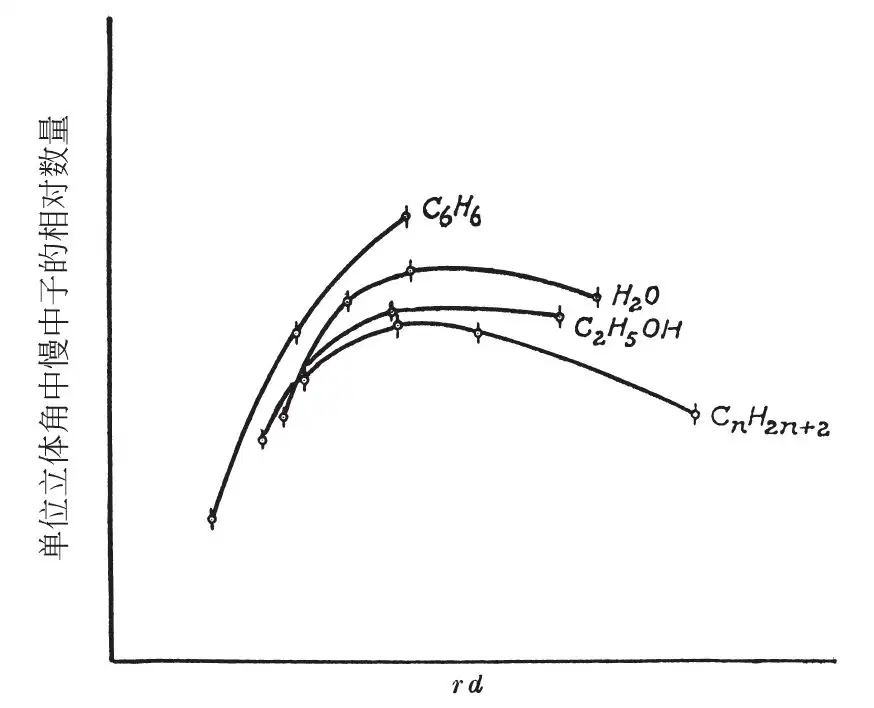

英文
英文小哈尔班，普雷斯沃克
编者按
费米于近期指出中子穿过含氢物质时会与质子碰撞而减速。这篇文章中汉斯·冯·哈尔班和彼得·普雷斯沃克仔细探讨了这一过程。他们注意到能量相对较低的中子会由于将能量传递给介质分子而减速，在这种情况下，中子减速可能受到介质分子性质的影响。因此，他们使中子穿过水、酒精、苯和液体石蜡，以测量慢中子的强度是如何随穿透深度的变化而变化的。实验结果显示中子慢化的程度似乎反映出了介质分子运动的差别。后来，中子慢化被证明对于可控核裂变是非常关键的。 英文
费米等人[1]指出，中子在通过含氢的物质时会因与质子发生碰撞而损失能量。进一步深入地讨论这一慢化过程是有趣的。只要中子的能量大于它要通过的物质分子中质子的束缚能，中子平均在每一次的碰撞过程中就会有一半能量传给了质子，这点似乎是很明显的。但当中子的能量减少到这种束缚能以下时，中子就一定会激发分子中氢原子的转动和振动，从而使中子的能量减少。 英文
不能确定的是：中子对质子的碰撞截面是否为中子速度的单调函数，或者当中子能量与分子的束缚能可比时，碰撞截面是否呈现不连续性。在后一种情况下，两种含有不同结合形式氢的物质在中子慢化的过程中可能会表现出差异性。我们已经进行了一些实验，结果显示出了这种差异性的存在。 英文
用水（氢含量为0.11 g/cm3）、乙醇（氢含量为0.10 g/cm3）、苯（氢含量为0.067 g/cm3）和液体石蜡（氢含量为0.14 g/cm3）分别装满半径不同（5～15cm）的球。在球的中央放置着一个中子源（氡+铍），在球的表面安置一个银片并对其辐照5分钟，然后利用银片的放射性测量慢中子的强度。 英文
图1显示了单位立体角中慢中子的数量随着rd的变化关系，其中r是球的半径，d是1cm3液体的含氢量。这些曲线的一般意义是众所周知的。对小半径而言，随着半径的增大，观测到中子的强度显著增加，这是由于中子与质子碰撞而速度减慢。在某一个固定值之后，随着半径的增大，中子的强度反而减弱。这清楚地表明，并不是所有通过球表面的中子都会到达下一个更大的球面上。慢中子的消失必然是因为它被吸收了。 英文

图1 英文
伯格和韦斯科特[2]已经详细地研究了石蜡和其他含氢物质对慢中子的吸收，他们发现，其在通过厚1.6cm的水之后，慢中子的数量减少了一半。在对石蜡进行的初步实验中，我们采用不同的方法得到的数值为2.5cm。把一个中子源放在边长为14cm的立方体形石蜡的中心，在这个立方体石蜡上放置5个1cm厚的石蜡板，最后放置一块小银板。在石蜡板之间插入一块镉片，并变换其位置以使其与银板的距离不同。在相等辐射时间内，当银板和镉板的距离增大时，银的放射性会增加。由实验得到的曲线表明，当银板与镉板之间的距离增大了2.5cm时，镉吸收的影响减小到一半。 英文
图1表明，对不同的液体，慢中子强度的最大值是不相同的；这些差别不能仅仅归因于液体中氢含量的不同。同样，也不能用氧核或碳核吸收慢中子来解释。在与质子碰撞次数相同的情况下，中子在苯中通过的碳原子数是在液体石蜡中通过碳原子数的两倍，而且我们还发现，液体石蜡中慢中子强度的最大值远远低于在苯中慢中子强度的最大值，而苯中的最大值似乎得用半径最大的球才刚能达到。 英文
被测试的四种液体对于慢中子强度的影响力的差别，不能仅归因于是这些液体中氢、碳或氧含量的不同。这些液体的分子结构的不同也导致了它们之间的其他一些差别。因此，或许我们可以这样解释观测到的差别，即不同分子中通过激发氢原子的转动和振动来减慢中子的概率不同。 英文
（沈乃澂 翻译；王乃彦 审稿）